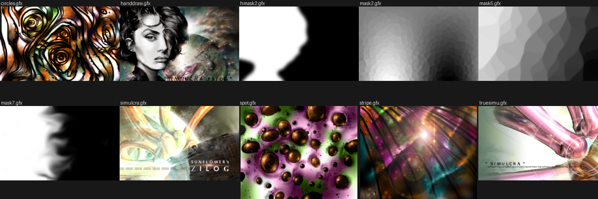
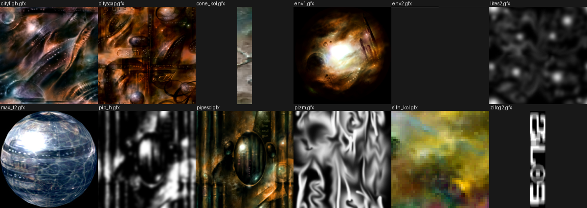
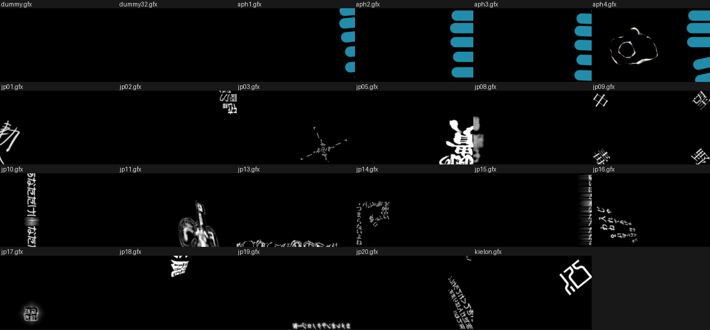
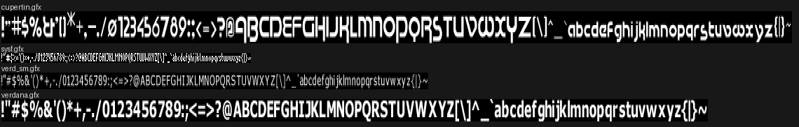
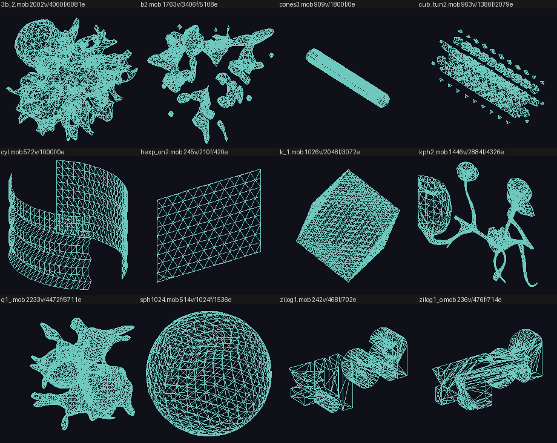

ZILOG by Sunflower (mrock, falcon,
visualize, voomie): a 32-bit DOS demo (PMODE/W extender, Watcom C, x87
floating point, no MMX), 320x200 true colour (a 32-bit
buffer of 64000 dwords, presented through VESA; the demo tries 32, 24,
16, 15 and 8 bpp). Music is a 28-channel USLM module
(ana.u) played by the Useless Sound System v1.04.
Everything the demo loads comes from one LZW container (63 files,
appended to ZILOG.EXE). The port is in
site/js/ (ES modules, no build); everything below is
checked against re/*.md, the JS sources and the machine
code in re/image.bin (unpacked, load address 0x10000).
How "exact" is used here: the 2D library, the 3D engine and the music
player were compared with the original machine code run under
Unicorn on real data (tools/test/run_*.sh); the
scene-level code was compared the same way for the scene-specific
functions, but whole frames were only compared by eye
with a DOSBox capture (structure, motion, colours). So: functions are
bit-exact (unless said otherwise), scene timing/composition is faithful
but not pixel-verified.
| tick | what | how it is driven |
|---|---|---|
| main loop | 11 loops while (order < N), N = 5, 14, 19, 23, 27,
31, 35, 41, 49, 51, 60 |
the music position (order, row), read from the sound system's IRQ callback |
| ISR | 70 Hz timer (func 0x10010): tick counter | scene time t = ticks*0.25 - base (float32) |
| host | one frame per iteration, dt = ticks since the previous frame | accumulations such as fades are x += dt * k |
0x00RRGGBB (byte0 = blue).
The flip (0x17c11) copies it to VESA memory; in 565/555 modes it
quantises. The port presents the 32 bpp path
(presentToRGBA). Exact. The DOSBox reference video
is R/B swapped for direct-colour modes (verified with a 29 byte test
.COM), the port is not.re/PORT_music.md:| time | order | scene |
|---|---|---|
| 0:00 - 0:17.3 | 0..4 | scene 0: the wire knot |
| 0:17.3 - 0:48.5 | 5..13 | scene 1: "simulcra", plasma reveal, glow spirals |
| 0:48.5 - 1:07.5 | 14..18 | scene 2: chrome blob in a bubble field |
| 1:07.5 - 1:21.4 | 19..22 | scene 3: refracted pipes |
| 1:21.4 - 1:35.2 | 23..26 | scene 4: bronze blob over pink tubes |
| 1:35.2 - 1:49.0 | 27..30 | scene 5: glow-sprite tornado |
| 1:49.0 - 2:02.9 | 31..34 | scene 6: brown blob over the swirl |
| 2:02.9 - 2:23.7 | 35..40 | scene 7: wire lattice and a black hole |
| 2:23.7 - 2:51.3 | 41..48 | scene 8: hexagon tiles, the drawing, sprite spiral, tunnel wipe |
| 2:51.3 - 2:58.3 | 49..50 | scene 9: cube tunnel and wire grid |
| 2:58.3 - 3:29.4 | 51..59 | credits
(while (order < 0x3c && DAT_000314f5 == 0)) |
Because the demo only needs (order, row) and a sticky
"sync marker" value (a module effect, command 0x20/0x33, stored in
DAT_000314f4), the port seeks by setting the module
position. Note the loop that follows scene 9 is the credits loop: the
decompiler/task numbering has 10 numbered scenes plus it (11 loops).
music/usm.js): bit
exact against the original mixer, every sample of the 10448 blocks
(209.434 s), plus ~110 fuzzed module variants. It assumes the Sound
Blaster 16 path (44.1 kHz stereo 16-bit software mixer) that DOSBox
gives; other SB modes of the original are not ported.sync & 15 (low nibble) picks a small picture
(smalpics/jp*.gfx) that is blitted additively or as a
difference; sync & 0x10 fires a colour-matrix
rectangle. sync is sticky: the main loop never
clears it, so the same picture keeps being drawn until the next marker
changes it.Every blend in the demo is done by a lookup table
indexed with pixel bytes, and the same ~40 routines are used by all
scenes (re/PORT_2d.md).
T1[a<<8|b] = 255 - ((255-a)*(255-b) >> 8) (the
"screen" blend, lut1 / DAT_000402f4) and
T2 = ~T1 (lut2). The port builds them
literally:
t1[o] = (255 - (((255 - y) * (255 - x)) >>> 8)) & 255; // y = row, x = column
t2[o] = ~t1[o] & 255;T1[alpha][c]-style lookups give
c*alpha/255-like products for free (the second index is
complemented first, hence the ~ everywhere).radialCosSpot
(0x14639) is a 256x256 byte soft disc
255*(0.5+0.5*cos(r/40.4)) with
r = hypot(1.17*y, x) clamped to 127 (rows stretched 1.17,
so it is round on a non-square pixel display); cosCosPlasma
(0x14c51) is the "egg box" 16 + 56*(1+cos x')*(1+cos y').
The only place where double precision is not enough is the ray
table 0x14d0b: trunc(r*cos+100) needs the x87's 64-bit
mantissa (residue -1.8e-16 at 3*pi/2 makes the original produce 99, not
100), emulated with an exact residual (truncSum).spriteAddAlpha 0x1f6b2,
spriteSubtract 0x1f337 ...): the 256x256 byte spot is
scaled onto a box of 2R pixels with a 24.8 position/radius, and added
(saturating, per byte) or subtracted. The alpha version routes the spot
through T2[alpha][~m]. Exact.colorMatrixRect,
0x22990): nine 256-entry int32 tables (8.24 fixed point, built by
0x148c4) so that a 3x3 colour matrix is nine loads and six adds:
out_c = ((T[3c][b0] + T[3c+1][b1] + T[3c+2][b2]) >>> 24) + 0x70
(byte store, no clamp). The matrix is YCbCr-like; this is what makes the
grey/green strips that flash on the beat.maskFadeToBlack (0x1ec58),
maskWipeCrossfade (0x1ecaa),
alphaMaskCrossfade (0x1ee44), maskInvert
(0x1eeb4) take an 8-bit image as a mask. With
k = mask - threshold: k<=0 keep the pixel,
k>31 apply the full effect, otherwise one table lookup
per channel produces a 31-step soft edge. The threshold ramps with time,
so the effect sweeps across the picture in the shape of the
mask:
const k = mask[i] - thr;
if (k <= 0) continue;
scr[i] = k > 0x1f ? 0 : lk(T, k << 3, ~scr[i] >>> 0); // maskFadeToBlackdec ecx loop wrap 2^32 times; never used), and
the radial blur in scene 7/8 reads the ray table 256 entries past its
end (heap in the original, zeros in the port).printText 0x17641): a font
object built from an 8-bit strip (glyph boundary = an all-zero pixel
column) and in-band control bytes
(0x08 alpha, 0x0b toggle darken...). Scenes
build the string with sprintf and then patch the alpha
byte in the buffer to fade the text:
txt[1] = Math.trunc(v38) (scene 1), or
buf[1] = trunc(120 sin t + 128) (scene 4).T[shade<<8 | texel]. Only 1066
nodes need trigonometry; the 64000 pixels are interpolated. The node
tables are built every frame by the scene functions
(warpMeshLens, warpMeshA/B,
lensNodes below). Exact, except the lens node
tables, whose x87 fsin/fcos of large arguments
differ by <= 2 LSB in a few nodes (0x1d200 at T=2600: 27
of 1066 nodes; 0x1ce90: 71 % of 22386 values identical,
rest +-1).A compact float engine (lib/mesh3d.js,
mesh3d-raster.js), compared with the original on 206 checks
(loader, transforms, 95 render cases covering every (mode, sub) used by
main): pixel exact, including the face
sort order.
.mob files
(PNTS float xyz, FACE 3 x u32,
EDGE 2 x u32 chunks). The loader builds vertex-to-face
lists (by prepending, so a vertex's faces come out in
decreasing order) and, for each edge, the first two faces common to both
ends.rotate (Euler; in
modes 0 and 2 the source is the already transformed array, i.e.
cumulative, in place) -> faceNormals /
vertexNormals (once for env-mapped objects) ->
project: invz = 1/(z/focal + dist),
x' = x*invz + cx, y' = cy + y*invz*0.83 (the
0.83 is the non-square pixel correction; a double constant in the code)
-> render(mode, sub).trunc((z0+z1+z2)*100) of the transformed vertices,
sorted descending with the demo's own Hoare quicksort (not stable,
ported literally so that ties come out the same). No z-buffer: painter's
algorithm.tri_266a0), 4 textured, 5 silhouette
edges (an edge with one front and one back face), 6 the same with
per-vertex colour, 7/8 all edges, 9 a soft sprite at every
vertex (radius = 26*invz), sub 3 coloured. Lines are
anti-aliased through the blend tables; polygons are clipped
(Sutherland-Hodgman) against the screen.fstp dword; the port
uses doubles with Math.fround at the same stores. On all
test vectors this is bit identical. A harness trap worth knowing:
Unicorn starts with x87 control word 0 (24-bit precision); with it the
sort key trunc((z0+z1+z2)*100) differs by one for some
faces. The demo runs fninit (0x37f).All scene timings come from the music position; time
t = ticks*0.25 - base is float32, with the base re-set at
the start of most scenes (scenes 8 and 9 do not re-base: the
port derives their base BASE7 from the music time of order
35, which only phases the swirl centres, not their look).
Black screen, a tangled wire sphere-knot (3b_2.mob)
rises from below and wobbles on a Lissajous path
(cx = 220 + 50 sin(..),
cy = 100 + 50 cos(..) + 240 decaying at 0.7/tick). Drawn
twice: mode 5 (anti-aliased silhouette lines, grey
255), then mode 9/3 with mesh.npts
temporarily set to min(order*64 + row, npts): the vertex
sprites appear one per music row, then the count is
restored. Sprite colour of vertex i is the i-th pixel of
silh_kol.gfx (a 45x45 gold gradient). The rotation angles
are 3 sin(cos(0.008 t) + 0.009 t) and similar: nested
sin/cos give smooth pseudo-random wandering.
mesh.npts = Math.min(st.pos, nOrig); // points are revealed one per music row
obj.mode = 9; render(obj, ctx);
mesh.npts = nOrig;Post: vertical box blur with radius
int(3 sin(cos(0.5t)+0.1t)+7) (4..10, "breathing") into a
second buffer; on sync markers 2/3 a horizontal blur of radius 50 that
decays by 3/tick (min 3) smears the object on the beat. Marker 1 prints
"ugly, discrete jumps". Library code only; every function exact, the
whole composition verified by eye. (rotateNormals is called
by the original but unused in modes 5/9, so it is skipped.)
The full-screen picture simulcra.gfx (orange glass
tubes) is copied each frame, then:
cosCosPlasma) is rendered through a 41x26 lens
mesh (func 0x1d200) by the 8-bit grid warp into a mask, and
maskFadeToBlack(scr, mask, thr) with
thr = -32 + 0.7*ticks (until 260) darkens every pixel whose
mask is above the threshold: the picture emerges from black through a
swirling plasma pattern.spriteAddAlpha sprites on Lissajous paths (~1700 sprites
per frame):
const s = F(((Math.trunc(T * 130 + i)) & 0xffff) * 0.003);
const x = F(S(i*0.2 + T*0.02 - C(i - T*0.01)) * 60 + 160 + C(ang) * (s*s*0.01));
const y = F(S(ang) * s + (S(i*0.3 + T*0.013) * 60 + 100));
const sz = F(S(fs*T*0.14 + ang + i) * 4 + 5); // fs = +1/-1: odd and even rings counter-rotate
const alpha = Math.trunc(255 - v48*12 + v48*sz); // v48 grows to 21 (orders 5,6), decays after order 9maskInvert: the
plasma value is the per-pixel amount of colour inversion.maskFadeToBlack with mask5.gfx as the mask,
threshold 270 - 1.2*ticks: a wipe to black along the mask
shape.Lens mesh (0x1d200): per node a rotation of (x,y) by a wobbling
angle, scaled by 1/(0.001*(a x^2 + b y^2) + c), times
524288, fistp, & 0xffffff. Validation: 15
of 16 vectors bit-identical; the 16th (T = 2600, far beyond the demo)
differs in 27 of 1066 nodes by <= 2 (x87 fsin of large
arguments vs libm).
Background spot.gfx (blurred purple/green light burst).
On top: an environment-mapped blob (b2.mob, env
max_t2.gfx) wobbling so violently it looks like a spiky
star, 1024 dark glossy bubbles
(sph1024.mob, every vertex a subtractive soft
sprite), a ring wireframe (5 concentric 26-gons, radius 800), a 70 px
additive light sprite and a four-line crosshair (255 at the centre
fading to 0 at the border). Sync 1 flashes jp09.gfx. It
starts with a fade-in from black through mask2.gfx.
fpatan),
r' = r + 140 sin(cos(B r - e) + A r + d), back to
cartesian. Because the displacement is a function of the radius
only, it looks like shock waves running through the shape; applied
to the flat ring mesh it turns it into a bowl.
const phi = F(A2(y, x)), theta = F(A2(Math.sqrt(y*y + x*x), z)), r = F(Math.sqrt(z*z + (y*y + x*x)));
const r2 = F(S(C(B*r - e) + (A*r + d)) * 140 + r);(j*26+i, j*26+(i+1)%26); it is a legitimate
mesh so the wobble, projection and edge renderer are reused. Status:
ring, wobble, sine blob, colour waves bit-identical; far/near faces and
sphere sprites pixel-exact given the same projected arrays.Full-screen pipes (pipesd.gfx) with moving light streaks
(lites2.gfx pushed through a bump displacement map built
from pip_h.gfx, 0x14b3d), refracted by a 40x25 grid warp
driven by three moving lenses; on the right a 15x22
raster of dark dots (zilog2.gfx scrolled by t, each
non-0xff byte a subtractive sprite); on the left a brown metal blob
(kph2.mob, env env1.gfx, deformed by 0x20b94)
drawn as shaded faces (mode 0) and darkening silhouette lines (mode 6/5,
colour from 0x1b446). Sync: sync & 15 flashes one of
jp01,02,03,05,08,10,11,13; sync & 16 a
jittering colour-matrix rectangle. From order 21, a per-scanline
horizontal blur
radius = (28 - 35 cos(pi y/100)) * blend * (.5 + .5 sin(.09t - sin(.12t)))
smears the screen into streaks.
H = 1/(.001(a^2 w1 + b^2 w2) + .2) - 1/(..)_2 - 1/(..)_3
(three anisotropic Lorentzian bumps, summed with alternating sign: the
swirl), rotated coordinates scaled by H and stored as 8.16 texture
coordinates (* 196608 = 3 texels per unit).dst = satadd(src, light[(disp[i] + dx) & 0xffff]). One
16-bit add wraps both axes, and scrolling dx makes the
highlights slide over the relief as if refracted. Status: lens
table 71 % identical, the rest +-1 (x87 extended precision); the rest as
above.truesimu.gfx with a liquid-bronze blob
(q1_.mob, env env1.gfx) flying from the right
edge to the left (cx = 320 - t). The same mesh is
drawn as white silhouette lines on a second copy of the picture, and the
two are cross-faded through mask7.gfx
(alphaMaskCrossfade, 0x1ee44): the outline shows only where
the mask is non-zero. A text ("lypho.. / acid.. / ni's'se..") is
sprintf'ed from the music position (order*row,
order-row, order+row in hex) with pulsing
alpha. From order 26 row 32 the vertical blur radius grows by dt per
frame up to 90: the picture dissolves into vertical streaks. Sync:
sync&0xf blends a jp13..jp20 picture by
difference (blitDifference),
sync&0x10 fires the colour-matrix strip.
circles.gfx (concentric rings) with 909 additive glow
sprites (cones3.mob: 101 rings of 9 points; soft disc,
coloured per point from cone_kol.gfx, size by 1/z) twisting
like a tornado, plus a frame inset 5 px from the cloud's screen bounding
box and four diagonals (8 AA lines, colour ramp 0 -> fade). From
order 30 row 48 the cloud rises (cy = 100 - f^2,
f += dt/2) and the frame fades out.
k = trunc(z0 - 500) drives a phase, centre, scale and angle
(ang = cos(sin(.032t) + .02t) + sin(.01t)*k*.01,
z = 200 cos(.04t + .008k)); every point is scaled about the
centre, rotated in XY, and assigned the ring's z. Ring-dependent phases
twist the cone into a vortex. Bit exact on 15 times x 909
points.ax = (b<<8)|a makes each line
fade along its length, and fade<<8 swaps which end is
bright.circles.gfx with a polar-warped plasma strip
lighten-blended over it (white rays from a wandering centre, fading in
over ~14 s) and a chocolate-brown blob (k_1.mob) sliding in
from the top, bulging and rippling, drawn env-mapped +
cityscap.gfx surface texture (mode 2, additive
tri_266a0), then again as white contour lines at
dist 5.2 instead of 6.0 (the outline floats slightly larger
than the body). Strip texture: 256 bytes of plzm.gfx row
int(t) & 255, changing once per time unit. Deformer
0x20b94: r' = r + amp * sin(ax+d) sin(by+e) sin(cz+f) (a
cheap 3D standing wave;
amp = 200 sin^2(cos(.1t)+.01t) + 200). Planar UVs (0x1b04f)
from the x,y bounding box. Five helpers bit-identical against the
original.
Teal/red radial streaks around a white core (blurred plasma strip, colourised), a Hamlet quote in a small font, and a 10x10x6 lattice (600 points, 3160 edges, no faces) of 3D lines bent around a wandering singularity; edges are white near the hole and fade away from it.
r' = sqrt(r^2 + 200000) - 200. This is ~r far away and ~0
inside r << 447, so points near the centre collapse onto it: a
smooth singularity from a handful of x87 instructions.lut[(strip_idx<<8) | blur], with
lut = v*pal[idx]/64 from pal.sc (0x15168):
colourisation and multiplication in one lookup.uv.x = 255 - min(255, k|xpt - c|). Not
verified pixel for pixel: whole frames (compared by eye); the radial
blur's out-of-range ray reads differ (zeros vs heap).lut as in scene 7, the Hamlet text, and a plane of hexagon
tiles (hexp_on2, 7 points per hexagon): 0x21664 scatters
each tile with its own three rotation angles (from the tile's integer
centre and t), zoom 12 - 11 cos(.15A) and a z wave;
amplitude 1 - cos B makes the tiles fly in and settle. The
tiles are drawn as mode 4/sub 4: handdraw.gfx is used as a
screen-space texture (pitch 0x140, tri_26e28), so
each tile shows the drawing exactly where it lands.handdraw.gfx) with a cylinder (cyl.mob)
deformed by the radial-lens function 0x20a10 and drawn only as glow
sprites; sprites in front are alpha-modulated by
hmask2.gfx, so they vanish behind the hair. A 4-frame flash
of aph1..4.gfx at order 43 rows 5..8.stripe.gfx +
twisted cub_tun2 as grey additive Gouraud
faces whose intensity is the depth stored as the vertex
"colour" (0x1b1b4), plus dark contour lines;
maskWipeCrossfade(hmask2, threshold = 260 - 0.9*dt per tick)
replaces the drawing with the tunnel through the hand-drawn mask.
Faces/sprites render pixel-exact on 8 cases (one case has 6 px of mask
garbage: sprites at x<0 read the mask at a negative index, i.e. heap
in the original).The same twisted cube tunnel (sliding left after pos 0xc80) plus a
42x19 wobbling wire grid with no data of its own: point
(i,j) at
(220 + 5j + 10 sin(sin(.072t + .1i) + .05t + .1j), 5i + 10 sin(sin(.032t + .1i) + .06t + .1j)),
two lines per cell, whose end brightness is
zilog2.gfx[(trunc(i+t) & 127)*20 + j] * k: the 20x128
byte picture scrolls one row per time unit, so the grid lights up in the
shape of the picture.
const px = (r, c) => Math.trunc((tex[(r & 0x7f) * 20 + c] ?? 0) * k);
line_21f3b(ctx, a, b, x0, y0, X(i, j + 1), Y(i, j + 1)); // a, b = start/end brightnessstripe.gfx background; zilog1_o (an outline
copy of the logo) textured with cityligh.gfx plus white
silhouette lines; the extruded logo zilog1 where function
0x1b854 pairs each front vertex with its back vertex and 0x219e8 pushes
the back vertices radially away from a wandering point by
150 + 100 sin(..) + glow (glow = 50 on every
module sync marker, decaying 1/tick: the light-ray burst on the beat),
drawn as grey additive faces and depth-coloured edges; finally a 20x20
wire grid rippled by 0x206e0. The credits (mrock, falcon, visualize,
voomie) fade in line by line (pos > 0xe18 + 6k), alpha
255 -> 0 at 0.9/tick by patching the string's alpha byte.
All art is stored in the "DATA?" block appended to
ZILOG.EXE: 63 files, each
[u32 size, char name[32], 'LZW:' u32 outLen, bits]
(GIF-style LZW, LSB-first, 9..12-bit codes, 0x100 clear, 0x101 end).
They are extracted to raw/ (tools/extract.mjs)
and decoded in the port by site/js/core/gfx.js (GFX),
site/js/lib/fx2d-blit.js expandRle8 (RLE) and
site/js/core/mob.js (MOB). The previews below were decoded
independently with a Pillow script (python3 -I), applying
the rules listed here.
Header (22 bytes): 'GFX:', u32 w, u32 h, u8 bpp (8 or
0x18), u8 flags, u32 dataLen, u32 palLen. Flags: 1 = RLE, 2 = delta
bytes (running sum mod 256 over the whole data), 4 = planar channels.
0x18 images are 3 planes of w*h bytes in B,G,R order (no palette, true
colour); 8 bpp images are greyscale (palLen 0). The 8 bpp, flags=1 files
are an RLE stream of unaligned u32 counts: 0xffffffff =
end, top bit set = literal run of count & 0x7fffffff
bytes, otherwise skip count zero pixels. Colour counts
below are distinct values in the decoded image.
| Group | Files | Size | Format | Colours |
|---|---|---|---|---|
| fullpics (flags 6) | circles, handdraw, simulcra, truesimu | 320x200 | 24 bpp | 41009, 33457, 40842, 37781 |
| fullpics (flags 6) | spot, stripe | 320x256 | 24 bpp | 37406, 58835 |
| fullpics masks (flags 2) | hmask2, mask2, mask5, mask7 | 320x200 | 8 bpp grey | 256, 253, 227, 256 |
| textures (flags 6) | cityligh, cityscap, env1, max_t2, pipesd | 256x256 | 24 bpp | 45041, 23451, 21124, 19570, 28606 |
| textures (flags 2) | lites2, pip_h, plzm | 256x256 | 8 bpp grey | 236, 256, 255 |
| textures | cone_kol 12x80 (flags 6, 892 colours), silh_kol 45x45 (flags 6, 1968), zilog2 20x128 (8 bpp, flags 2, 155), env2 256x2 (24 bpp, flags 0, 4) | |||
| smalpics (flags 1) | aph1..aph4 | 320x200 | 24 bpp, plain file | 334, 16, 346, 529 |
| smalpics (flags 1) | jp01 02 03 05 08 09 10 11 13..20, kielon | 320x200 | 8 bpp grey, RLE in file (2.7 to 12.9 KB each) | 59 to 256 |
| other | dummy (8 bpp, flags 0), dummy32 (24 bpp, flags 4) | 320x200 | 1 (all zero) | |
| fonts (flags 0, 8 bpp) | cupertin 1128x23 (17 values), sysf 356x7 (2), verd_sm 609x12 (18), verdana 1008x16 (17) | one strip per font |
Usage (from the port code and re/ notes):
3b_2 knot (scene 0) takes its per-vertex colours from
silh_kol (gold gradient); b2 +
max_t2 blob (scene 2); kph2 +
env1 (scene 3); q1_ + env1 (scene
4); pipesd + lites2 (scene 3);
cityscap surface texture (scene 6); cityligh
and stripe credits and scenes 8/9 backgrounds;
cone_kol colours of the cone sprites; pip_h is
the source of the bump displacement map; plzm plasma strip
rows (scenes 6 to 8); zilog2 dither dots and scene 9;
masks: mask2 fade-in (scene 2), mask5 exit
wipe (scene 1), mask7 cross-fade (scene 4),
hmask2 alpha mask (scene 8); jp09 scene 2
flash, jp01 02 03 05 08 10 11 13 additive flashes
(sync&7), jp13..jp20 difference blends,
aph1..4 four-frame flash at order 43, dummy
initial blur-target pixels of scene 7. Fonts: cupertin in
the common g1/g3 code, verdana and verd_sm in
the g5/scene-7 code; sysf, kielon,
dummy32 and env2 are not referenced by
site/js. Each font strip splits into 94 glyphs at all-zero
pixel columns (checked on all four).
Figures: full pictures and masks, textures, small pictures, jp flashes, dummies, font strips.




raw/pal.sc (803 bytes): RIX3 header (w=5,
h=5, 10-byte header), 768-byte 6-bit RGB palette at file offset 10, then
25 pixels. It feeds the 256x256 shade LUT built at 0x15168.
Palette
preview (values scaled v*255/63).
'MOB:' u32 size, then chunks PNTS (n x 3
float), FACE (n x 3 u32), EDGE (n x 2 u32).
Counts read from the files:
| File | Bytes | Vertices | Faces | Edges | Used by |
|---|---|---|---|---|---|
| 3b_2 | 121424 | 2002 | 4060 | 6081 | scene 0 knot |
| b2 | 102924 | 1763 | 3406 | 5108 | scene 2 blob |
| cones3 | 32532 | 909 | 1800 | none | 101 rings of 9 points (909 sprites) |
| cub_tun2 | 44852 | 963 | 1386 | 2079 | tunnel |
| cyl | 18888 | 572 | 1000 | none | scene 8 |
| hexp_on2 | 8852 | 245 | 210 | 420 | hexagon tiles (flat, z = -5.6) |
| k_1 | 61496 | 1026 | 2048 | 3072 | scene 6 |
| kph2 | 86600 | 1446 | 2884 | 4326 | scene 3 |
| q1_ | 134180 | 2233 | 4472 | 6711 | scene 4 |
| sph1024 | 30776 | 514 | 1024 | 1536 | 1024 bubbles |
| zilog1 | 14168 | 242 | 468 | 702 | credits, front half |
| zilog1_o | 14288 | 236 | 476 | 714 | credits, back half |
Most meshes are normalised to a [-500, 500] cube (cones3, cub_tun2, cyl, q1_, hexp_on2 and the zilog1 pair are not). Wireframes: all 12 (faces drawn, edges where there are no faces).

radialCosSpot (0x14639): 256x256 byte soft disc,
255*(0.5+0.5cos(r/40.4)), r clamped to 127, rows stretched by 1.17.screenBlendTables (0x14834): two 64 KB tables,
T1[a<<8|b] = 255-((255-a)(255-b)>>8), T2 = ~T1.colorMatrixTables (0x148c4): 9x256 int32 tables, 8.24
fixed point.bumpDisplacementMap (0x14b3d): u16 displacement map
derived from pip_h.cosCosPlasma (0x14c51): 256x256 bytes,
16+56(1+cos)(1+cos).radialRayTables (0x14d0b): 512 rays x 188 steps.paletteShadeLut (0x15168): from
pal.sc.buildFont
(0x174fe).f_1b960(20,20,50); sin tables.| part | status |
|---|---|
| music player (USM), 10448 blocks | bit exact vs the original under Unicorn (+ fuzzing) |
| 2D library (212 vectors + flip converters) | bit exact |
| 3D engine (206 checks, 95 render cases) | pixel exact |
| scene-specific functions (g1..g5 tests, e.g. 16 + 15 + 17 + 48 vectors for g1, g3, g4, g5) | bit exact, except the x87-sensitive ones below |
| lens tables 0x1ce90 / 0x1d200 and deformers 0x20a10, 0x219e8, 0x21664 | within +-1 LSB / ~2e-5 relative (x87 extended precision and
fsin of large arguments vs libm) |
| whole frames / scene composition | not pixel-verified: compared by eye with the DOSBox capture |
scene time bases of 8 and 9 (BASE7) |
derived from the music time, phases the swirls only |
| reads beyond buffers (radial blur ray table, sprites at x<0) | zeros in the port, heap in the original |
| 16/15 bpp expansion to 8 bit | assumption (not used on the 32 bpp path) |
| music on a non-SB16 device, sample rates != 44100 | not ported / Catmull-Rom resampling |